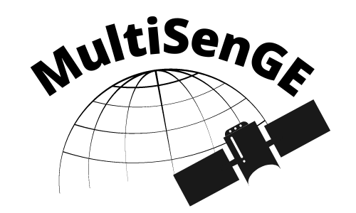

Classification results over 5 cities in France
Methods
For this work, we developed a multitemporal and multimodal neural network trained on the Grand-Est region with the MultiSenGE dataset. Further explanations will be made after the publication of the research paper associated with this work. The main idea of this presentation is to study the generalization capacity of a network trained on the Grand-Est for other cities in France.
The classification results of the model for 10 land use/land cover classes for several cities in France can be viewed below.
References
This work is the result of several current and previous research projects which are listed below:
Romain Wenger, Anne Puissant, Jonathan Weber, Lhassane Idoumghar & Germain Forestier (2022) U-Net feature fusion for multi-class semantic segmentation of urban fabrics from Sentinel-2 imagery: an application on Grand Est Region, France, International Journal of Remote Sensing, 43:6, 1983-2011, DOI: 10.1080/01431161.2022.2054295
Wenger, R., Puissant, A., Weber, J., Idoumghar, L., and Forestier, G.: MULTISENGE: A MULTIMODAL AND MULTITEMPORAL BENCHMARK DATASET FOR LAND USE/LAND COVER REMOTE SENSING APPLICATIONS, ISPRS Ann. Photogramm. Remote Sens. Spatial Inf. Sci., V-3-2022, 635–640, https://doi.org/10.5194/isprs-annals-V-3-2022-635-2022, 2022.
MultiSenGE dataset can be download on Zenodo:
Romain Wenger, Anne Puissant, Jonathan Weber, Lhassane Idoumghar, & Germain Forestier. (2022). A new remote sensing benchmark dataset for machine learning applications : MultiSenGE (1.0) [Data set]. Zenodo. https://doi.org/10.5281/zenodo.6375466
Toulouse
Toulouse is a city in the southwest of France with more than 400,000 inhabitants and an area of 118 km2.
Dijon
Dijon is a French city, prefecture of the Côte-d'Or department and capital of the Bourgogne-Franche-Comté region. It has more than 160,000 inhabitants and covers 40 km2.
Orléans
Orléans is a city in the Center-Northwest of France on the banks of the Loire, prefecture of the Loiret department and capital of the Centre-Val de Loire region. It has more than 116,000 inhabitants and covers 27 km2.
Lille
Lille is a city in the north of France, prefecture of the Nord department and capital of the Hauts-de-France region. It has more than 235,000 inhabitants and covers 34 km2.
Rennes
Rennes is a city in the North-West of France, capital of the Ille-et-Vilaine department and of the Brittany region. It has more than 220,000 inhabitants and covers 50 km2.